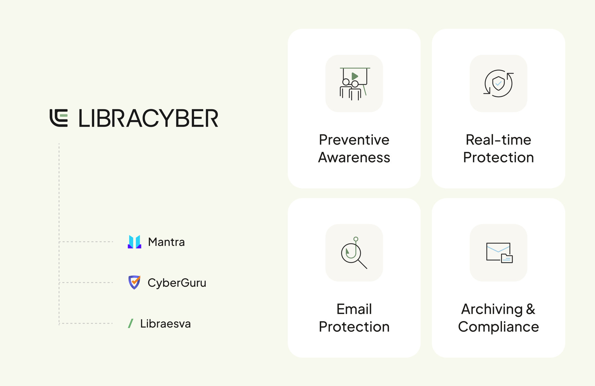
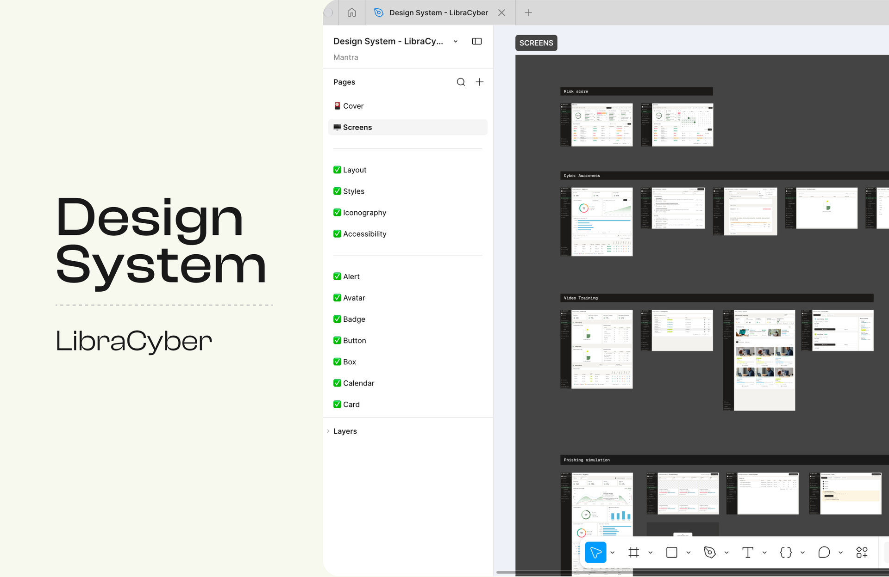
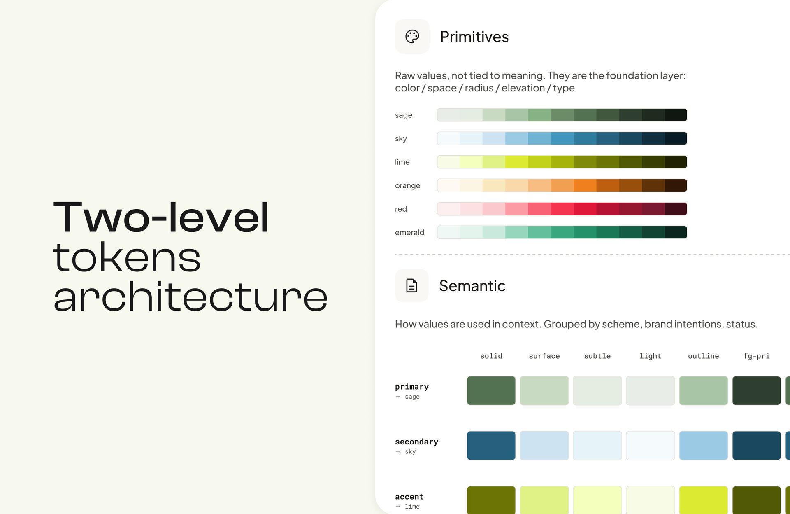
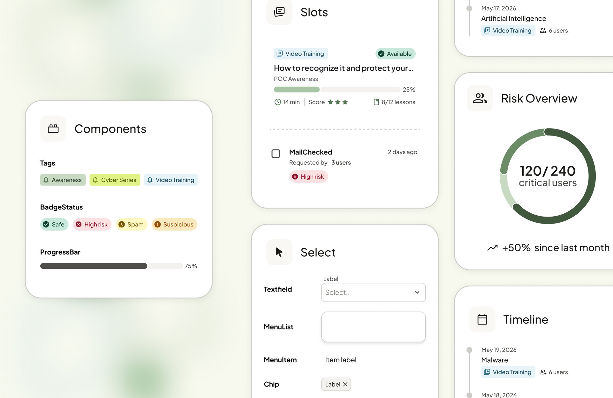
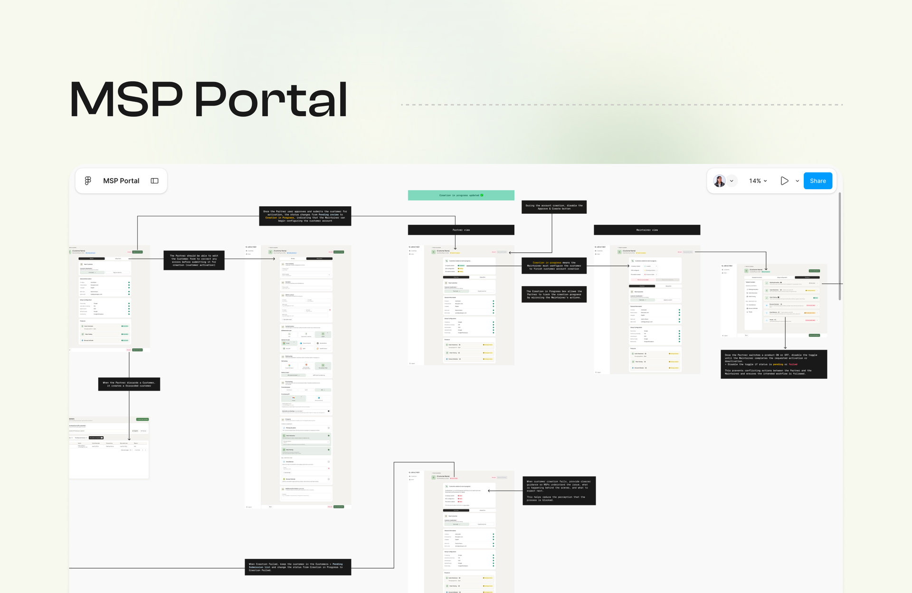
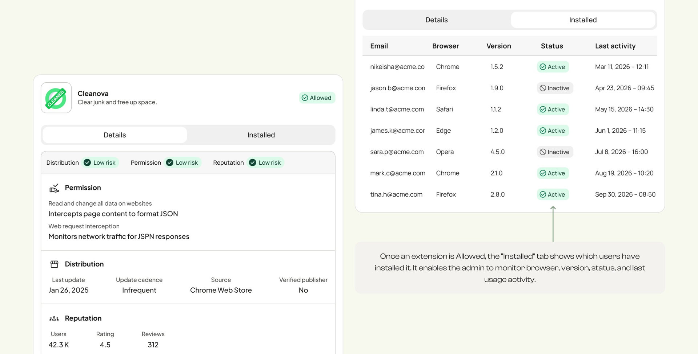
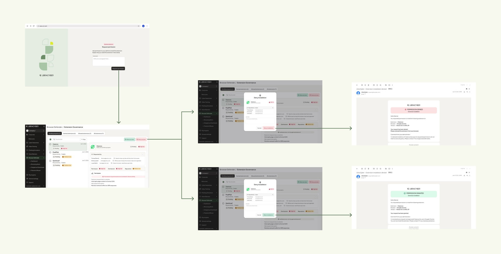

From fragmented products to a coherent ecosystem.
LibraCyber set out to build a coherent European cybersecurity ecosystem. Two companies were being consolidated into a single product ecosystem: Mantra, from France, and CyberGuru, from Italy. Some features were meant to be merged, others redesigned, others removed.
Two applications, two histories. The challenge was to make them feel like one: building on what already existed, without copy-pasting it, and without stacking every feature of both apps into a single product.
The ecosystem inherited different visual identities, interaction patterns and technical implementations. Existing Mantra and CyberGuru customers also needed to be migrated to the new LibraCyber platform.
Three challenges
Three complementary dimensions of product design.
One connected design mission, from the foundations of the ecosystem to the product experiences built on top of them.
- 01Design SystemBuilding shared foundations across products.A shared design system created from scratch: foundations, design tokens, reusable components, accessibility specifications and patterns.
- 02MSP PortalEmpowering MSPs through self-service.The MSP Portal redesigned so Managed Service Providers can manage customers, onboard organisations and provision services more independently.
- 03Extension GovernanceTurning security monitoring into actionable governance.The browser extension management experience, redesigned with clearer risk information, administrative controls and employee request workflows.
01 — Foundations
Building shared design foundations across modules.
Even components serving the same purpose — chips, filters, data tables — looked and behaved differently from one module to another. The goal was a shared foundation that could support multiple modules without sacrificing their individual requirements.

Approach
A token decision, made with engineering
I first explored a three-level token architecture. After discussing it with engineers, I realised that maintaining that level of complexity would require resources the team couldn't allocate. I simplified it to two levels, and validated the approach with engineering before rolling it out.
- Primitive tokens
- Raw values such as colours, spacing and typography.
- Semantic tokens
- Meaningful references such as text-primary, background-default and border-subtle.

Accessibility
The system took into account WCAG contrast requirements, accessible component states and typography readability. Accessibility guidelines were documented in Figma, using MUI’s accessibility as a base.

Implementation constraints
The full visual implementation was postponed because the team lacked frontend design resources. Rather than block feature development, improvements continued using the design system's interaction principles and behaviours while keeping the existing visual UI when necessary.
Key decisions
- Two token levels, not three. After discussing it with engineers, I dropped a complexity the team couldn’t maintain.
- MUI as the base. I started from its components and accessibility rules instead of building from zero.
- Interaction principles first. The visual rollout was postponed for lack of frontend resources, so principles moved ahead on the existing UI without blocking features.
A design system needs to balance consistency, flexibility and maintainability with the resources the organisation actually has.
02 — Operations
Empowering MSPs to manage customers independently.
Managed Service Providers (MSPs) manage several customer organisations and provision cybersecurity services for them.
In Mantra, some operational tasks still depended on the internal team, a potential bottleneck as MSPs onboarded more customers.
CyberGuru customers already had an MSP Portal. Despite its flaws, it was still working, and migrating it was a must-have to bring every customer onto the new LibraCyber app.
How might we empower MSPs to onboard and manage more customers independently, while ensuring continuity of their existing operations during the migration to LibraCyber?

Approach
Four main areas
Key decisions
- Map before designing. I documented existing operations to see what depended on the internal team and what could move to MSPs.
- CyberGuru portal first. Migrating it was a condition for moving every customer to LibraCyber.
- No conflicting actions. While a product activation is in progress, its toggle is disabled so Partner and Maintainer can’t contradict each other.
- Clear failure states. When customer creation fails, the portal explains what happened and what to do next, so the process never feels blocked.
Objectives
- Make it easier for MSPs to onboard and manage a growing customer base.
- Reduce operational bottlenecks caused by dependency on the internal LibraCyber team.
- Give MSPs greater autonomy.
- Ensure continuity of an essential capability during the Mantra and CyberGuru migration.
Designing an effective B2B platform means understanding the operational processes behind the interface, not just the screens users interact with.
03 — Governance
From browser extension monitoring to active governance.
The existing Extension Governance feature let administrators monitor browser extensions and spot potential security risks, but gave them little control over which extensions employees could install. Without comprehensive allow-list and deny-list management, there was a gap between identifying a risk and acting on it.
It was also one of the most commented-on features despite relatively low engagement.
How might we transform a monitoring-oriented feature into an actionable security governance experience?
Approach
- Distribution
- Update frequency, publisher verification and distribution information.
- Permissions
- Website data access and potentially intrusive permissions.
- Reputation
- Number of users, ratings and reviews.

Request & Approve workflow
Employee journey
- Requests a browser extension.
- Accesses a dedicated request page.
- Provides a justification.
- Receives an email confirming the request.
Administrator journey
- Receives the request in Browser Defender.
- Reviews the extension information and the employee's justification.
- Decides whether to allow or block the extension.

Delivery
I worked independently on the UX/UI design, gathering feedback from the PM and engineers to validate requirements and technical constraints. The first internal release was delivered before my engagement ended. Implementation was still ongoing when my mission concluded, with no reported complaints.
Key decisions
- Scoring left untouched. I reorganised the same information into Distribution, Permissions and Reputation.
- From monitoring to action. Allow and deny controls, including in bulk, sit next to the risk information.
- Employee and administrator connected. The employee justifies a request, and the administrator sees it with its risks before deciding.
Outcome
The redesign addressed a fundamental limitation: administrators could identify potential risks but had few ways to act on them. It shifted the proposition towards active extension management and gave the sales team a stronger feature to demonstrate to prospective customers. No customer adoption or commercial impact has been measured.
Turning security information into decisions takes more than presenting risks. It takes designing the workflows and controls that let people respond to them.
Building consistency without sacrificing flexibility.
Working across LibraCyber let me approach product design from several perspectives: the foundations of the ecosystem, the operational tools used by MSPs, and the security workflows experienced by employees and administrators.
A coherent product ecosystem doesn't mean making every product identical. It means creating shared foundations, consistent behaviours and understandable experiences, while respecting the needs of different users and operational contexts.